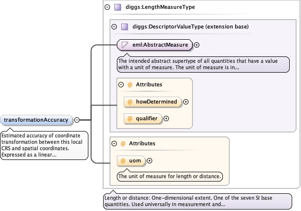

The spatial location of the origin (0,0,0) point of this localengineering CRS, expressed in a recognized spatial coordinatereference system. This point serves as the anchor for transforminglocal engineering coordinates to spatial coordinates.
The 'actuate' attribute is used to communicate the desired timing of traversal from the starting resource to the ending resource; it's value should be treated as follows:onLoad - traverse to the ending resource immediately on loading the starting resource onRequest - traverse from the starting resource to the ending resource only on a post-loading event triggered for this purpose other - behavior is unconstrained; examine other markup in link for hints none - behavior is unconstrained
The 'show' attribute is used to communicate the desired presentation of the ending resource on traversal from the starting resource; it's value should be treated as follows: new - load ending resource in a new window, frame, pane, or other presentation contextreplace - load the resource in the same window, frame, pane, or other presentation contextembed - load ending resource in place of the presentation of the starting resourceother - behavior is unconstrained; examine other markup in the link for hints none - behavior is unconstrained
<element name="originLocation" type="diggs:PointLocationPropertyType"><annotation><documentation>The spatial location of the origin (0,0,0) point of this local engineering CRS, expressed in a recognized spatial coordinate reference system. This point serves as the anchor for transforming local engineering coordinates to spatial coordinates.</documentation></annotation></element>
Spatial extent and direction for each axis defined in theCartesian coordinate system. There should be one axisLocationelement for each axis in the coordinate system. The ordershould match the axis order in the Cartesian CS definition.
<element name="axisLocation" type="diggs:AxisLocationPropertyType" minOccurs="1" maxOccurs="unbounded"><annotation><documentation>Spatial extent and direction for each axis defined in the Cartesian coordinate system. There should be one axisLocation element for each axis in the coordinate system. The order should match the axis order in the Cartesian CS definition.</documentation></annotation></element>
Identifier for the mathematical method to be used for coordinatetransformation between this local engineering CRS and spatialcoordinates. Examples include: "affine", "helmert", "direct-linear-referencing", "polynomial".
<element name="transformationMethod" type="gml:CodeType" minOccurs="0"><annotation><documentation>Identifier for the mathematical method to be used for coordinate transformation between this local engineering CRS and spatial coordinates. Examples include: "affine", "helmert", "direct-linear-referencing", "polynomial".</documentation></annotation></element>
Rotation angle(s) for orienting the local coordinate systemaxes relative to the spatial coordinate system. For 2D systems,one rotation angle is specified (rotation about the verticalaxis). For 3D systems, up to three rotation angles may bespecified (e.g., Euler angles or rotations about X, Y, and Z axes).The interpretation of multiple angles depends on the specifiedtransformationMethod.
Diagram
Type
PlaneAngleMeasureType
Properties
content
simple
minOccurs
0
maxOccurs
3
Source
<element name="rotationAngle" type="diggs:PlaneAngleMeasureType" minOccurs="0" maxOccurs="3"><annotation><documentation>Rotation angle(s) for orienting the local coordinate system axes relative to the spatial coordinate system. For 2D systems, one rotation angle is specified (rotation about the vertical axis). For 3D systems, up to three rotation angles may be specified (e.g., Euler angles or rotations about X, Y, and Z axes). The interpretation of multiple angles depends on the specified transformationMethod.</documentation></annotation></element>
Uniform scale factor applied to the local coordinate systemrelative to the spatial coordinate system. Default is 1.0(no scaling). Values greater than 1.0 indicate that localengineering coordinates represent larger distances than thecorresponding spatial coordinates. Values less than 1.0 indicatethat local engineering coordinates represent smaller distances.
Diagram
Type
double
Properties
content
simple
minOccurs
0
default
1.0
Source
<element name="scaleFactor" type="double" minOccurs="0" default="1.0"><annotation><documentation>Uniform scale factor applied to the local coordinate system relative to the spatial coordinate system. Default is 1.0 (no scaling). Values greater than 1.0 indicate that local engineering coordinates represent larger distances than the corresponding spatial coordinates. Values less than 1.0 indicate that local engineering coordinates represent smaller distances.</documentation></annotation></element>
Estimated accuracy of coordinate transformation between thislocal CRS and spatial coordinates. Expressed as a lineardistance uncertainty (e.g., in meters or feet). This valuerepresents the expected positional error when transformingcoordinates between the two systems.
Diagram

Type
LengthMeasureType
Properties
content
simple
minOccurs
0
Source
<element name="transformationAccuracy" type="diggs:LengthMeasureType" minOccurs="0"><annotation><documentation>Estimated accuracy of coordinate transformation between this local CRS and spatial coordinates. Expressed as a linear distance uncertainty (e.g., in meters or feet). This value represents the expected positional error when transforming coordinates between the two systems.</documentation></annotation></element>
Complex Type diggs:LocalCartesianCRSType
Namespace
http://diggsml.org/schemas/3
Annotations
Type definition for a spatially-defined local Cartesian coordinate referencesystem. This type includes the standard CRS components (coordinate system,datum) plus additional spatial positioning elements (origin location, axislocations, transformation parameters) that enable coordinate transformationsbetween the local CRS and spatial coordinate reference systems.
<complexType name="LocalCartesianCRSType"><annotation><documentation>Type definition for a spatially-defined local Cartesian coordinate reference system. This type includes the standard CRS components (coordinate system, datum) plus additional spatial positioning elements (origin location, axis locations, transformation parameters) that enable coordinate transformations between the local CRS and spatial coordinate reference systems.</documentation></annotation><complexContent><extension base="gml:AbstractCRSType"><sequence><element ref="gml:cartesianCS"><annotation><documentation>The Cartesian coordinate system defining the axes and their properties for this local CRS. Must be a CartesianCS (not spherical, cylindrical, or other coordinate system types).</documentation></annotation></element><element ref="gml:engineeringDatum"><annotation><documentation>The engineering datum that defines the anchor point and realization of this local coordinate reference system.</documentation></annotation></element><element name="originLocation" type="diggs:PointLocationPropertyType"><annotation><documentation>The spatial location of the origin (0,0,0) point of this local engineering CRS, expressed in a recognized spatial coordinate reference system. This point serves as the anchor for transforming local engineering coordinates to spatial coordinates.</documentation></annotation></element><element name="axisLocation" type="diggs:AxisLocationPropertyType" minOccurs="1" maxOccurs="unbounded"><annotation><documentation>Spatial extent and direction for each axis defined in the Cartesian coordinate system. There should be one axisLocation element for each axis in the coordinate system. The order should match the axis order in the Cartesian CS definition.</documentation></annotation></element><element name="transformationMethod" type="gml:CodeType" minOccurs="0"><annotation><documentation>Identifier for the mathematical method to be used for coordinate transformation between this local engineering CRS and spatial coordinates. Examples include: "affine", "helmert", "direct-linear-referencing", "polynomial".</documentation></annotation></element><element name="rotationAngle" type="diggs:PlaneAngleMeasureType" minOccurs="0" maxOccurs="3"><annotation><documentation>Rotation angle(s) for orienting the local coordinate system axes relative to the spatial coordinate system. For 2D systems, one rotation angle is specified (rotation about the vertical axis). For 3D systems, up to three rotation angles may be specified (e.g., Euler angles or rotations about X, Y, and Z axes). The interpretation of multiple angles depends on the specified transformationMethod.</documentation></annotation></element><element name="scaleFactor" type="double" minOccurs="0" default="1.0"><annotation><documentation>Uniform scale factor applied to the local coordinate system relative to the spatial coordinate system. Default is 1.0 (no scaling). Values greater than 1.0 indicate that local engineering coordinates represent larger distances than the corresponding spatial coordinates. Values less than 1.0 indicate that local engineering coordinates represent smaller distances.</documentation></annotation></element><element name="transformationAccuracy" type="diggs:LengthMeasureType" minOccurs="0"><annotation><documentation>Estimated accuracy of coordinate transformation between this local CRS and spatial coordinates. Expressed as a linear distance uncertainty (e.g., in meters or feet). This value represents the expected positional error when transforming coordinates between the two systems.</documentation></annotation></element></sequence></extension></complexContent></complexType>